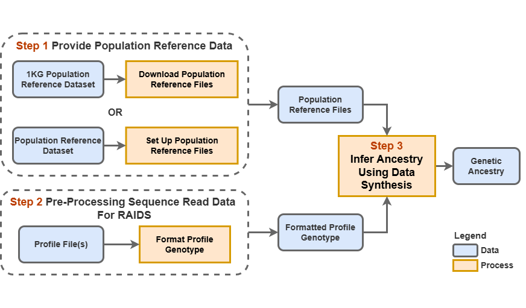
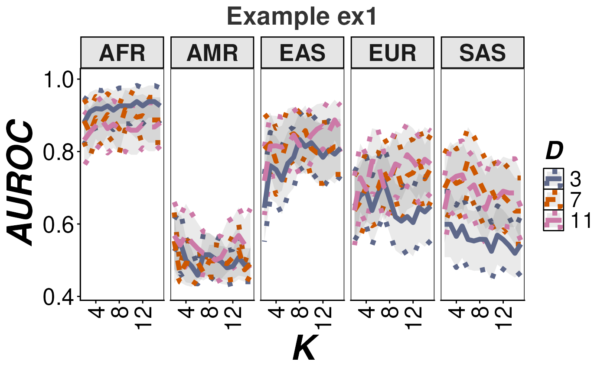
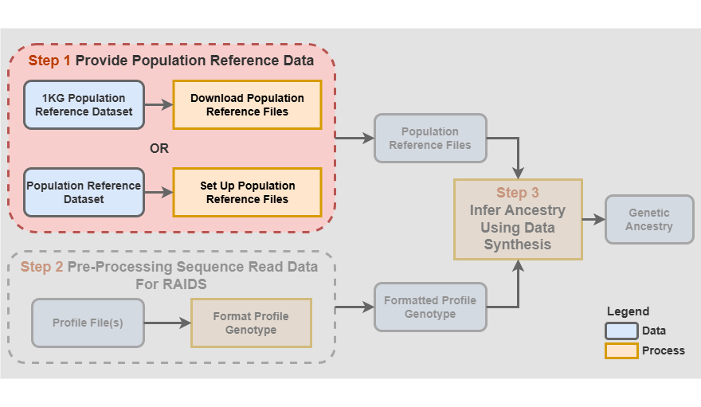

vignettes/RAIDS.Rmd
RAIDS.Rmd
Package: RAIDS
Authors: Pascal Belleau [cre, aut] (ORCID: https://orcid.org/0000-0002-0802-1071), Astrid Deschênes
[aut] (ORCID: https://orcid.org/0000-0001-7846-6749), David A. Tuveson
[aut] (ORCID: https://orcid.org/0000-0002-8017-2712), Alexander
Krasnitz [aut], National Institutes of Health [fnd] (ROR: https://ror.org/01cwqze88)
Version:
1.11.1
Compiled date: 2026-11-06
License: Apache License (>= 2)
The RAIDS package and the underlying RAIDS code are distributed under the Apache License 2.0. You are free to use and redistribute this software.
If you use the RAIDS package for a publication, we would ask you to cite one of the following.
If you use a more recent version (Bioconductor release 3.24 or later):
Pascal Belleau, Xintong Li, Astrid Deschênes, Laine Marrah, Alexander Krasnitz. A versatile set of computational tools for inference of genetic ancestry from human molecular data. bioRxiv 2026.10.09.758080; doi: https://doi.org/10.64898/2026.10.09.758080
If you use the legacy version (Bioconductor release 3.23 or earlier):
Pascal Belleau, Astrid Deschênes, Nyasha Chambwe, David A. Tuveson, Alexander Krasnitz; Genetic Ancestry Inference from Cancer-Derived Molecular Data across Genomic and Transcriptomic Platforms. Cancer Res 1 January 2023; 83 (1): 49–58. https://doi.org/10.1158/0008-5472.CAN-22-0682
The RAIDS (Robust Ancestry Inference using Data Synthesis) package enables accurate and robust inference of genetic ancestry from human molecular data other than whole-genome or whole-exome sequences of cancer-free DNA. The current version can handle sequences of:
including those from cancer-derived nucleic acids. The RAIDS package implements a data synthesis method that, for any given molecular profile of an individual, enables, on the one hand, profile-specific inference parameter optimization and, on the other hand, a profile-specific inference accuracy estimate. By the molecular profile we mean a table of the individual’s germline genotypes at genome positions with sufficient read coverage in the individual’s input data, where sequence variants are frequent in the population reference data.
In addition, the RAIDS package can now infer both global ancestry and admixture proportions of the individual.
To install this package from Bioconductor, start R (version 4.3 or later) and enter:
if (!requireNamespace("BiocManager", quietly = TRUE))
install.packages("BiocManager")
BiocManager::install("RAIDS")This is an overview of the RAIDS inferential framework:

An overview of the genetic ancestry inference procedure.
The main steps are:
Step 1. Set up working directory and provide population reference files
Step 2. Pre-process sequence read data into a profile genotype file
Step 3. Infer genetic ancestry
Post-Analysis. Summarize and visualize the results
These steps are described in detail in the following.
First, the following working directory structure should be created:
#############################################################################
## Working directory structure
#############################################################################
workingDirectory/
data/
refGDS/
profileGDS/
The following code creates a temporary working directory structure where the example will be run.
#############################################################################
## Create a temporary working directory structure
## using the tempdir() function
#############################################################################
pathWorkingDirectory <- file.path(tempdir(), "workingDirectory")
pathWorkingDirectoryData <- file.path(pathWorkingDirectory, "data")
if (!dir.exists(pathWorkingDirectory)) {
dir.create(pathWorkingDirectory)
dir.create(pathWorkingDirectoryData)
dir.create(file.path(pathWorkingDirectoryData, "refGDS"))
dir.create(file.path(pathWorkingDirectoryData, "profileGDS"))
}The population reference files should be downloaded into the data/refGDS sub-directory. The following code downloads the complete pre-processed files for 1000 Genomes (1KG), for the hg38 build of the human genome, in the GDS format. The size of the 1KG GDS file is 15GB.
#############################################################################
## How to download the pre-processed files for 1000 Genomes (1KG) (15 GB)
#############################################################################
cd workingDirectory
cd data/refGDS
wget https://labshare.cshl.edu/shares/krasnitzlab/RAIDSpopRef/v0.2.0/matGeno1000gV0.2.0.gds
wget https://labshare.cshl.edu/shares/krasnitzlab/RAIDSref/v0.2.0/matAnnot1000gV0.2.0.gds
cd -
For illustrative purposes, a small population reference GDS file (called ex1_good_small_1KG.gds) and a small population reference SNV Annotation GDS file (called ex1_good_small_1KG_Annot.gds) are included in this package. Please note that these “mini-reference” files are for illustrative purposes only and cannot be used to infer genetic ancestry reliably.
In this example, the mini-reference files are copied to the data/refGDS directory.
#############################################################################
## Load RAIDS package
#############################################################################
library(RAIDS)
#############################################################################
## The population reference GDS file and SNV Annotation GDS file
## need to be located in the same sub-directory.
## Note that the mini-reference GDS file used for this example is
## NOT sufficient for reliable inference.
#############################################################################
## Path to the demo 1KG GDS file is located in this package
dataDir <- system.file("extdata", package="RAIDS")
pathReference <- file.path(dataDir, "tests")
fileGDS <- file.path(pathReference, "ex1_good_small_1KG.gds")
fileAnnotGDS <- file.path(pathReference, "ex1_good_small_1KG_Annot.gds")
## The 'pathWorkingDirectoryData' variable has been set in a previous step
file.copy(fileGDS, file.path(pathWorkingDirectoryData, "refGDS"))
## [1] TRUE
file.copy(fileAnnotGDS, file.path(pathWorkingDirectoryData, "refGDS"))
## [1] TRUEIf you plan to infer admixture proportions, you need to install ADMIXTURE version 1.3.0 or later (earlier versions may work but have not been tested) (Alexander et al. 2009). You can download it from: https://dalexander.github.io/admixture/download.html
Example for Linux and Mac:
#############################################################################
## How to download and install the ADMIXTURE software
#############################################################################
cd workingDirectory
mkdir admixture
cd admixture
wget https://dalexander.github.io/admixture/binaries/admixture_linux-1.4.0.tar.gz
tar -xzvf admixture_linux-1.4.0.tar.gz
ADMIX=$(pwd)/admixture_linux-1.4.0/admixture
# For Mac:
# wget https://dalexander.github.io/admixture/binaries/admixture_macosx-1.3.0.tar.gz
# tar -xzvf admixture_macosx-1.3.0.tar.gz
# export ADMIX=$(pwd)/dist/admixture_macosx-1.3.0/admixture
cd -
A formatted profile genotype file, associated with the sample whose genetic ancestry will be inferred, is required as input to RAIDS.
The genotype file can be in a VCF format, with the following mandatory fields: GT, AD and DP. The VCF file must be gzipped.
Also allowed is a “generic” file format, specified as a comma-separated table. The following columns are mandatory:
Note: a header with identical column names is required.
For demonstration purposes, the RAIDS package includes a SNP VCF file generated from a DNA sequencing profile.
## Path to the demo files inside this package
dataDir <- system.file("extdata", package="RAIDS")
#######################################################################
## The demo SNP VCF file of the DNA profile donor
#######################################################################
fileDonorVCF <- file.path(dataDir, "example", "snpPileup", "ex1.vcf.gz")All required directories have been created in Step 1. The paths to the reference files should be stored in variables for later use.
#############################################################################
## The file path to the population reference GDS file
## is required (refGenotype will be used as input later)
## The file path to the population reference SNV Annotation GDS file
## is also required (refAnnotation will be used as input later)
#############################################################################
pathReference <- file.path(pathWorkingDirectoryData, "refGDS")
refGenotype <- file.path(pathReference, "ex1_good_small_1KG.gds")
refAnnotation <- file.path(pathReference, "ex1_good_small_1KG_Annot.gds")
#############################################################################
## The output profileGDS directory, inside workingDirectory/data, must be
## created (pathProfileGDS will be used as input later)
#############################################################################
pathProfileGDS <- file.path(pathWorkingDirectoryData, "profileGDS")
if (!dir.exists(pathProfileGDS)) {
dir.create(pathProfileGDS)
}Within a single function call, data synthesis is performed, the synthetic data are used to optimize the inference parameters and, with these, the ancestry is inferred from the input sequence profile.
The function to infer categorical ancestry is ancestryInferencePCAKNN().
The parameters for RAIDS are now all kept in a RAIDSparam object.
The principal parameters are:
See ?RAIDSparam for the complete list of parameters.
In this demonstration, the demo SNP VCF profile included in the package is used.
###########################################################################
## Seqinfo and BSgenome are required libraries to run this example
###########################################################################
if (requireNamespace("Seqinfo", quietly=TRUE) &&
requireNamespace("BSgenome.Hsapiens.UCSC.hg38", quietly=TRUE)) {
#######################################################################
## Chromosome length information is required
## chr23 is chrX, chr24 is chrY and chrM is chr25
#######################################################################
genome <- BSgenome.Hsapiens.UCSC.hg38::Hsapiens
chrInfo <- Seqinfo::seqlengths(genome)[1:25]
#######################################################################
## The demo SNP VCF file of the DNA profile donor
#######################################################################
fileDonorVCF <- file.path(dataDir, "example", "snpPileup", "ex1.vcf.gz")
#######################################################################
## The parameter object required to run the ancestry inference
#######################################################################
paramRAIDS <- RAIDSparam(profileFile=fileDonorVCF,
genoSource="VCF",
studyType="LD",
pathProfileGDS=pathProfileGDS,
fileReferenceGDS=refGenotype,
fileReferenceAnnotGDS=refAnnotation,
chrInfo=chrInfo)
#######################################################################
## The ancestry inference call
#######################################################################
resOut <- ancestryInferencePCAKNN(pRAIDS=paramRAIDS)
#######################################################################
## The admixture proportions inference
## you have to uncomment this section
## and specify the path of ADMIXTURE software
#######################################################################
# paramRAIDS <- resOut$pRAIDS
# pathADMIXTURE(paramRAIDS) <- "PATH/admixture"
# resAdmixture <- computeAdmixtureProportions(pRAIDS=paramRAIDS)
}The temporary files created in this example are deleted as follows.
#######################################################################
## Remove temporary files created for this demo
#######################################################################
unlink(pathWorkingDirectory, recursive=TRUE, force=TRUE)
The inferred ancestry and the optimal parameters are present in the list object generated by the ancestryInferencePCAKNN() function.
###########################################################################
## The output is a list object with multiple entries
###########################################################################
class(resOut)
## [1] "list"
names(resOut)
## [1] "pcaSample" "paraSample" "KNNSample" "KNNSynthetic" "Ancestry"
## [6] "pRAIDS"Global ancestry is inferred using principal-component decomposition followed by nearest-neighbor classification. Two parameters are defined and optimized: D, the number of top principal directions retained and k, the number of nearest neighbors.
The results of the inference are provided as the Ancestry item in the resOut list. It is a data.frame with the following columns:
###########################################################################
## The ancestry information is stored in the 'Ancestry' entry
###########################################################################
print(resOut$Ancestry)
## sample.id D K superPop
## 113 ex1 10 2 AMRThe createAUROCGraph() function enables the visualization of RAIDS performance for the synthetic data, as a function of D and k.
###########################################################################
## Create a graph showing the performance for the synthetic data
## The output is a ggplot object
###########################################################################
createAUROCGraph(dfAUROC=resOut$paraSample$dfAUROC, title="Example ex1")
Visualization of RAIDS performance for the synthetic data.
In this illustrative example, the performance estimates are lower than would be expected with a realistic sequence profile and a complete reference population file.

Provide population reference data
A population reference dataset with known ancestry is required to infer ancestry.
Important reference files, containing formatted information about the reference dataset, are required:
The formats of those files are described in the Population reference dataset GDS files vignette.
The reference files associated with the Cancer Research paper are available. Note that these pre-processed files are for 1000 Genomes (1KG), in hg38. The files are available here:
https://labshare.cshl.edu/shares/krasnitzlab/aicsPaper
The size of the 1KG GDS file is 15GB.
The 1KG GDS file is mapped to hg38 (Lowy-Gallego et al. 2019).
This section can be skipped if you choose to use the pre-processed files.
This work was supported by a National Institutes of Health award U01 CA289357 to AK.
Claude Opus 5.5, through Claude Code, was used to assist with code
maintenance and unit test writing on the supervision of the maintainer.
Here is the output of sessionInfo() in the environment
in which this document was compiled:
## R Under development (unstable) (2026-11-04 r90836)
## Platform: x86_64-pc-linux-gnu
## Running under: Ubuntu 24.04.5 LTS
##
## Matrix products: default
## BLAS: /usr/lib/x86_64-linux-gnu/openblas-pthread/libblas.so.3
## LAPACK: /usr/lib/x86_64-linux-gnu/openblas-pthread/libopenblasp-r0.3.26.so; LAPACK version 3.12.0
##
## locale:
## [1] LC_CTYPE=en_US.UTF-8 LC_NUMERIC=C
## [3] LC_TIME=en_US.UTF-8 LC_COLLATE=en_US.UTF-8
## [5] LC_MONETARY=en_US.UTF-8 LC_MESSAGES=en_US.UTF-8
## [7] LC_PAPER=en_US.UTF-8 LC_NAME=C
## [9] LC_ADDRESS=C LC_TELEPHONE=C
## [11] LC_MEASUREMENT=en_US.UTF-8 LC_IDENTIFICATION=C
##
## time zone: UTC
## tzcode source: system (glibc)
##
## attached base packages:
## [1] stats4 stats graphics grDevices utils datasets methods
## [8] base
##
## other attached packages:
## [1] Matrix_1.7-6 RAIDS_1.11.1 philentropy_0.10.0
## [4] genio_1.1.2 BiocParallel_1.47.0 Rsamtools_2.29.0
## [7] Biostrings_2.81.9 XVector_0.53.0 GenomicRanges_1.65.4
## [10] IRanges_2.47.5 S4Vectors_0.51.10 Seqinfo_1.3.2
## [13] BiocGenerics_0.59.12 generics_0.1.4 dplyr_1.2.1
## [16] GENESIS_2.43.0 SNPRelate_1.47.0 gdsfmt_1.49.12
## [19] knitr_1.52 BiocStyle_2.41.0
##
## loaded via a namespace (and not attached):
## [1] RColorBrewer_1.1-3 jsonlite_2.0.0
## [3] shape_1.4.6.1 magrittr_2.0.5
## [5] GenomicFeatures_1.65.0 jomo_2.7-6
## [7] farver_2.1.2 logistf_1.26.1
## [9] nloptr_2.2.1 rmarkdown_2.32
## [11] fs_2.1.0 BiocIO_1.23.3
## [13] ragg_1.5.2 vctrs_0.7.3
## [15] memoise_2.0.1 minqa_1.2.8
## [17] RCurl_1.98-1.20 quantsmooth_1.79.0
## [19] htmltools_0.5.9 S4Arrays_1.13.2
## [21] BiocBaseUtils_1.15.1 curl_8.1.0
## [23] broom_1.0.13 pROC_1.19.1
## [25] SparseArray_1.13.4 mitml_0.4-5
## [27] sass_0.4.10 bslib_0.12.0
## [29] desc_1.4.3 sandwich_3.1-3
## [31] zoo_1.9-1 cachem_1.1.0
## [33] GenomicAlignments_1.49.2 lifecycle_1.0.5
## [35] iterators_1.0.14 pkgconfig_2.0.3
## [37] R6_2.6.1 fastmap_1.2.0
## [39] rbibutils_2.4.1 MatrixGenerics_1.25.0
## [41] digest_0.6.39 GWASTools_1.59.0
## [43] AnnotationDbi_1.75.2 textshaping_1.0.5
## [45] RSQLite_3.53.3 labeling_0.4.3
## [47] httr_1.4.9 abind_1.4-8
## [49] mgcv_1.9-5 compiler_4.7.0
## [51] withr_3.0.3 bit64_4.8.6
## [53] S7_0.2.2 backports_1.5.1
## [55] DBI_1.3.0 pan_2.0
## [57] MASS_7.3-66 quantreg_6.1
## [59] DelayedArray_0.39.8 rjson_0.2.23
## [61] DNAcopy_1.87.0 tools_4.7.0
## [63] lmtest_0.9-40 otel_0.2.0
## [65] nnet_7.3-21 glue_1.8.1
## [67] restfulr_0.0.17 nlme_3.1-172
## [69] grid_4.7.0 gtable_0.3.6
## [71] operator.tools_1.6.3.1 BSgenome_1.81.1
## [73] class_7.3-24 formula.tools_1.7.1
## [75] ensembldb_2.37.3 tidyr_1.3.2
## [77] data.table_1.18.6.1 GWASExactHW_1.2
## [79] stringr_1.6.0 foreach_1.5.2
## [81] pillar_1.11.1 splines_4.7.0
## [83] lattice_0.23-1 survival_3.8-12
## [85] rtracklayer_1.73.0 bit_4.6.0
## [87] SparseM_1.84-2 BSgenome.Hsapiens.UCSC.hg38_1.4.5
## [89] tidyselect_1.2.1 SeqVarTools_1.51.3
## [91] reformulas_0.4.4 bookdown_0.48
## [93] ProtGenerics_1.45.0 SummarizedExperiment_1.43.0
## [95] RhpcBLASctl_0.23-42 xfun_0.62
## [97] Biobase_2.73.2 matrixStats_1.5.0
## [99] stringi_1.8.9 UCSC.utils_1.9.0
## [101] lazyeval_0.2.3 yaml_2.3.12
## [103] boot_1.3-32 evaluate_1.0.5
## [105] codetools_0.2-20 cigarillo_1.3.1
## [107] tibble_3.3.1 BiocManager_1.30.27
## [109] cli_3.6.6 RcppParallel_6.2.1
## [111] rpart_4.1.27 systemfonts_1.3.2
## [113] Rdpack_2.6.6 jquerylib_0.1.4
## [115] GenomeInfoDb_1.49.1 Rcpp_1.1.2
## [117] png_0.1-9 XML_3.99-0.25
## [119] parallel_4.7.0 MatrixModels_0.5-4
## [121] ggplot2_4.0.3 pkgdown_2.2.1
## [123] blob_1.3.0 AnnotationFilter_1.37.0
## [125] bitops_1.1-0 lme4_2.1-0
## [127] glmnet_5.2 SeqArray_1.53.6
## [129] VariantAnnotation_1.59.4 scales_1.4.0
## [131] purrr_1.2.2 crayon_1.5.3
## [133] rlang_1.3.0 KEGGREST_1.53.6
## [135] mice_3.19.0